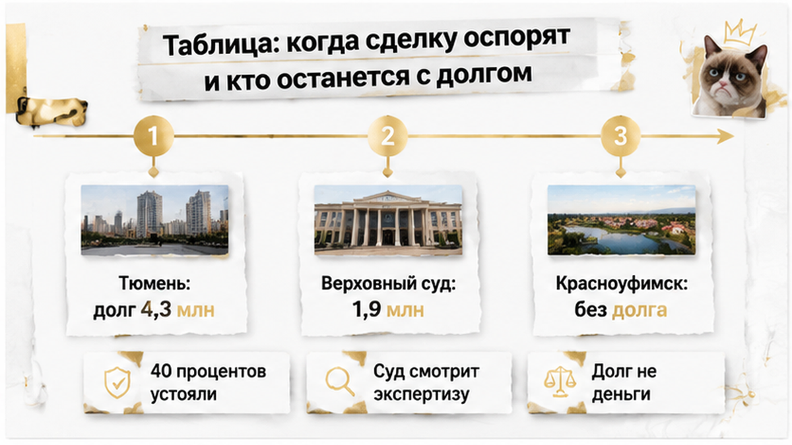
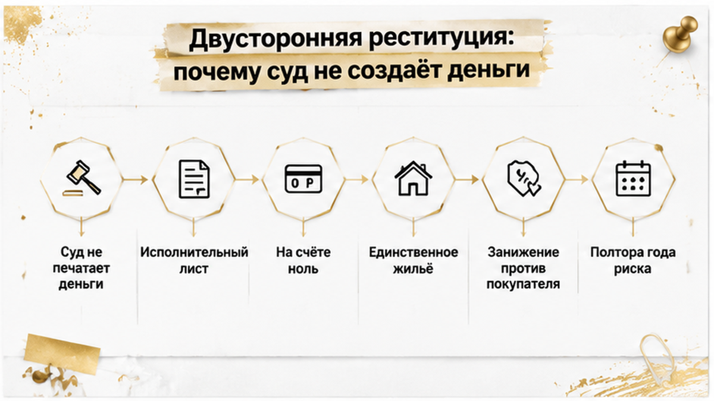
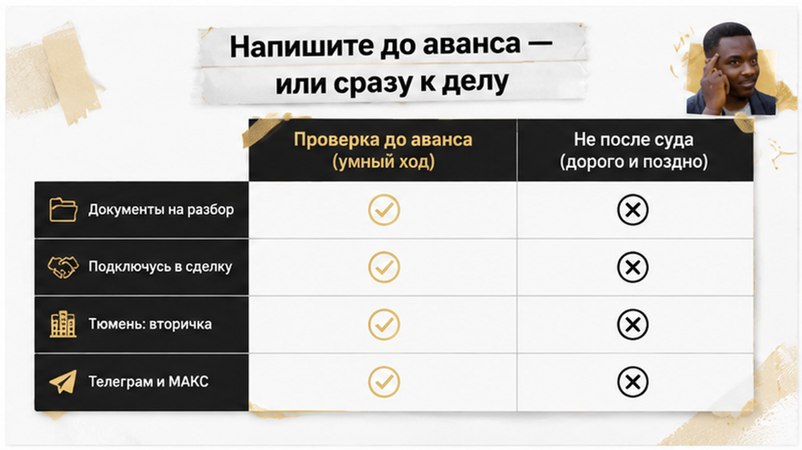

Квартиру в Тюмени продали летом 2023 года — обычная вторичка, собственник на месте, деньги на счёт, ключи новым хозяевам. Через полтора года Ленинский районный суд Тюмени сказал: сделки не было. Продавец — пенсионерка семидесяти лет, которую всё это время вели по телефону: «вашим счетам угрожает опасность», «действуйте быстро», «никому не говорите». Квартиру суд вернул ей — и тем же решением обязал вернуть покупателям 4,3 миллиона рублей, которых у неё нет с того самого лета. Покупатели к этому моменту успели сменить замки, обжиться и распланировать ремонт: теперь у них на руках решение в свою пользу и ноль напротив суммы.
Я — Святослав Шакин, The Риэлтор в Тюмени. Разбираю такие сделки по документам и по поведению сторон — до аванса, а не после суда.
Полный разбор кейсов и как я это ловлю до аванса — в Telegram и MAX.
История начинается не с квартиры, а с переезда. Татьяна Назарова продала жильё в Новом Уренгое и перебралась в Тюмень — на юг, поближе к нормальной зиме, как делают тысячи северян. А потом был звонок.
Сценарий до зевоты знакомый. «Сотрудник безопасности», угроза счетам, срочность, требование никому не рассказывать — ни детям, ни соседям, ни риэлтору. Люди на другом конце провода не спешат. Они работают месяцами и снимают деньги слоями: сначала то, что лежит, потом то, что можно продать.
Сначала ушли деньги от северной квартиры. Потом дошла очередь до тюменской. Летом 2023 года пенсионерка выставила жильё, спокойно провела показы, спокойно вышла на сделку — и перевела всю сумму тем, кто её вёл. Общий счёт потерь по делу — около 12 миллионов рублей.
Теперь самое неудобное. Формально сделка выглядела чище многих. Собственник — она сама. Никаких доверенностей, никакого «продаёт брат по бумажке», никаких наследников из другого города. Она пришла, она подписала, деньги пришли на её счёт. В этой сделке не было ни одного признака подделки — был человек, который физически ставит подпись и мысленно находится в другой реальности, где квартиру надо «срочно перевести, чтобы спасти».
Обычный покупатель смотрит на выписку из ЕГРН и на паспорт. Я смотрю ещё и на то, как продавец держит телефон.
Нотариального удостоверения в этой истории публично не подтверждено — в материалах фигурирует агентство «СОВА», а покупателей журналисты связали с семьёй сотрудника агентства, Якунина. После сделки собственницу выселили, замки сменили. Переход права прошёл, Росреестр отработал, новые владельцы получили ключи и полное ощущение, что всё позади. Ровно так же спокойно проходят и другие сделки, которые потом рассыпаются задним числом: ипотеку одобрили, а регистрацию отменили — и это тоже случилось после «чистых» проверок.
Дальше пенсионерка пошла в суд. И началась вторая часть — та, которую покупатели не просчитывают вообще никогда.

Весь спор свёлся к одному вопросу: понимала ли женщина значение своих действий в момент подписания договора. Не «обманули ли её вообще» — это и так было очевидно. Именно в момент подписания.
По делу провели три экспертизы. Итоговую — в Институте имени Сербского. Вывод: в период мошеннического воздействия у продавца были психологические нарушения, влиявшие на её волю в момент сделки.
20 января 2025 года Ленинский районный суд Тюмени признал договор купли-продажи недействительным. От продажи до решения прошло примерно полтора года. Полтора года покупатели считали квартиру своей, вкладывались в неё, строили планы и, скорее всего, ни разу не вспомнили про странности на сделке.
Дальше суд применил двустороннюю реституцию. Механику эту на рынке знают все — и почти никто не примеряет на себя. Квартира возвращается продавцу. Деньги возвращаются покупателю. Звучит как справедливость, пока не задашь один вопрос: откуда деньги?
Их нет. 4,3 миллиона ушли мошенникам летом 2023 года — в те же дни, когда сделка закрывалась. Пенсионерка вышла из суда с квартирой и с долгом. Покупатели вышли из суда без квартиры и с правом требования к человеку, у которого из имущества — та самая единственная возвращённая квартира, которую за долги не заберут.
Судебная победа продавца не убрала её долг. Решение в пользу покупателей не превратилось в деньги на счёте. Это ровно тот тупик, который я разбирал в другом деле: расписку на квартиру написали, а денег на счёте нет. Бумага есть, требование есть, взыскивать нечего. Реституция не создаёт денег — она только фиксирует, кто кому должен, и отправляет вас к приставам на годы.
И вот здесь я останавливаюсь и задаю неудобный вопрос, на который у меня самого нет универсального ответа. Если пожилой продавец странно реагирует на звонки и не отпускает телефон, вы продолжите сделку или остановите её даже после всех проверок? Напишите в комментариях — мне правда интересно, где у людей проходит эта граница. Потому что в жизни её обычно сдвигают в сторону «да ладно, сделка почти закрыта».

После каждой такой истории мне пишут одно и то же: «А если бы через нотариуса — устояло бы?»
Отвечаю неприятно: иногда да. Только это аргумент не в пользу спокойствия, а в пользу внимательности.
Красноуфимский район Свердловской области, июнь 2025 года. Ольга нотариально продаёт долю в доме и земельный участок за 3,95 млн рублей. В тот же день около 3,9 млн уходят мошенникам — тот же телефон, тот же «сотрудник безопасности», тот же сценарий со срочностью. Дальше Ольга идёт в суд оспаривать сделку.
И проигрывает.
Две психиатрические экспертизы дали одинаковое заключение: расстройства нет, в момент подписания женщина понимала значение своих действий. Суд добавил второй аргумент — покупатель не знал и не должен был знать о телефонном давлении. В требованиях отказали. Доля и участок остались у покупателя. Деньги остались у мошенников.
Сравните с Тюменью. Там реституцию дали, потому что Институт имени Сербского увидел психологические нарушения в период мошеннического воздействия, а суд разобрал обстоятельства вокруг покупателей. Здесь экспертиза сказала «понимала» — и сделка устояла. Один и тот же телефонный сценарий, две противоположные развязки. Разница не в форме договора. Разница в том, что написали эксперты и как со стороны выглядело поведение покупателя.
Теперь цифры, из-за которых я вообще сел за этот текст. Центр доказательной экспертизы Института Гайдара разобрал 298 судебных дел за 2023–2026 годы — споры по сделкам на фоне телефонного мошенничества. Нотариальных сделок в выборке оказалось 48. Устояли примерно 19. Около 40% от этих сорока восьми.
Читать это надо аккуратно, и я специально подчеркну. Около 40% — это не вероятность того, что любая нотариальная сделка устоит. Это доля выживших среди тех нотариальных сделок, которые уже дошли до суда после мошеннической схемы. То есть: попали в такую историю с нотариальным договором — и шансы удержать квартиру примерно четыре к десяти. Шесть покупателей из десяти вышли из суда без квартиры. С нотариусом в деле.
Причина обидно простая. Нотариус проверяет личность, документы и форму сделки. Он не проверяет, кто разговаривает с продавцом по телефону вечером накануне и кто диктует ей, что отвечать в кабинете. Скрытое давление не видно из удостоверительной надписи. Печать удостоверяет процедуру, а не свободу воли.
Про «все проверки прошли, а потом всё развалилось» у меня был отдельный разбор — там ипотеку одобрили, а регистрацию отменили из-за строки в ЕГРН. Банк, оценщик, юрист — все сказали «чисто». Строка всё равно нашлась.
Есть и федеральный ориентир, только не путайте его с Тюменью. Верховный суд 10 марта 2026 года рассмотрел дело № 84-КГ26-1-К3. Это не тюменское дело и не нотариальное: сделка шла через сервис безопасной сделки Сбербанка 5 октября 2023 года. Продавец — Евсейчик Т. П., 73 года, единственное жильё, цена 1,9 млн рублей, ниже рынка. Мошенники убедили её «временно передать» квартиру, деньги в тот же день ушли курьеру. Институт Сербского поставил F07.01, высокую внушаемость и заблуждение в момент сделки.
ВС оставил сделку недействительной по статьям 166, 167 и 178 ГК РФ. Право вернулось к продавцу, продавец должна вернуть 1,9 млн. И вот что здесь важно именно для покупателя: суд отдельно оценивал поведение самого покупателя. Заниженная цена плюс очевидное заблуждение пожилого продавца — обстоятельства, которые должны были вызвать вопросы. Не вызвали — ссылаться на добросовестность стало заметно сложнее.
Складываю три дела в один вывод. Сам по себе факт, что продавец после сделки перевёл деньги мошенникам, договор недействительным не делает — Ольга это доказала от обратного. Но стоит добавиться заключению экспертизы о заблуждении, заниженной цене или странностям, которые покупатель мог заметить, — весы уходят в сторону реституции. Психиатрическая оценка перед сделкой, видеозапись подписания, присутствие родственников, проверка истории права, титульное страхование — всё это снижает риск. Гарантии не даёт ни одна из этих мер.

Теперь практика. Она вырастает ровно из этих трёх дел, а не из общих рассуждений про бдительность.
Я не отговариваю покупать у пенсионеров. Половина хорошей тюменской вторички — это как раз аккуратные бабушкины квартиры с ремонтом восьмидесятых, живым двором и школой через дорогу. Отговариваю покупать вслепую.
И правило, которое я повторяю на каждом показе: сомнения проверяются до задатка. После задатка проверка превращается в переговоры, а переговоры под давлением сроков всегда заканчиваются в пользу того, кто торопит.
Разбираю такие сделки по документам до аванса, а не после суда. Свежие кейсы — в Telegram и MAX. Напишите — подключусь.

Три истории выше похожи до той минуты, когда судья берёт в руки заключение экспертов. Пожилой продавец, телефон, перевод денег посторонним в тот же день — набор один и тот же. А развязки противоположные: в Тюмени договор признали недействительным, в Красноуфимском районе нотариальная сделка устояла.
Разница не в том, кто «правее». Разница в том, что суд смог установить про состояние продавца в момент подписания — и что покупатель видел или обязан был видеть. Свожу в одну таблицу то, на что реально смотрит суд, и то, чем это заканчивается для кошелька каждой стороны.
| Ситуация | Что стало решающим для суда | Судьба квартиры | У кого остаётся денежный долг | Сигнал покупателю до аванса |
|---|---|---|---|---|
| Тюмень, продажа под телефонным давлением, лето 2023 | Три экспертизы, итоговая в Институте имени Сербского: психологические нарушения в период мошеннического воздействия | Возвращена продавцу решением Ленинского районного суда 20 января 2025 | У продавца перед покупателями — 4,3 млн, а деньги у мошенников | Возраст, недавний переезд, спешка, третьи лица рядом со сделкой |
| Дело ВС РФ № 84-КГ26-1-К3, сервис безопасной сделки, октябрь 2023 | Диагноз F07.01, высокая внушаемость, заблуждение продавца 73 лет плюс цена 1,9 млн ниже рынка | Право возвращено продавцу, недействительность оставлена в силе 10 марта 2026 | У продавца перед покупателем — 1,9 млн, деньги в тот же день ушли курьеру | Цена заметно ниже рынка при единственном жилье — суд спросит, почему вы не насторожились |
| Красноуфимский район, нотариальная продажа доли дома и земли, июнь 2025 | Две психиатрические экспертизы: расстройства нет, продавец понимала свои действия при подписании | Осталась у покупателя, в требованиях продавцу отказано | Долга у покупателя нет; продавец потеряла и 3,9 млн, и имущество | Нотариальная форма помогла покупателю, но не потому, что «нотариус проверил звонки» |
| Выборка Центра доказательной экспертизы Института Гайдара, 298 дел 2023–2026 | Из 48 нотариальных сделок устояли примерно 19 — около 40% по этой выборке | В большинстве оспоренных дел жильё уходит обратно продавцу | Чаще всего у продавца, у которого денег уже нет | Удостоверение — не щит: в оставшихся шести случаях из десяти нотариус в деле был |
Обычный покупатель читает третью колонку — «чья квартира». Я читаю четвёртую: у кого остаётся долг. Именно она объясняет, почему «сделку отменили» и «я вернул деньги» — два разных события, разделённые иногда годами.

Формула звучит справедливо: квартира возвращается продавцу, деньги возвращаются покупателю. Каждый со своим. Расходимся.
Только суд не печатает деньги. Он фиксирует, кто кому должен, и отправляет вас к приставам. Если пенсионерка перевела 4,3 млн мошенникам летом 2023 года, решение января 2025-го превращается в исполнительный лист против человека, у которого на счёте ноль. А единственное имущество — та самая возвращённая квартира, которую за долги не забрать.
Покупатель формально прав и практически пуст. Ровно тот же тупик я разбирал в деле, где расписка на квартиру есть, а денег на счёте нет: бумага на руках, требование законное, взыскивать нечего.
Второй вывод из таблицы — про цену. В деле, которое дошло до Верховного суда, заниженная стоимость единственного жилья сработала против покупателя. Суд прямо оценивал его поведение: дешёвая квартира плюс очевидно растерянный продавец должны были вызвать вопросы. Скидка перестала быть удачей и стала доказательством против того, кто ею воспользовался. Про эту механику у меня есть тюменский кейс, где скидку в два миллиона обещали, а в квартире прятали риск: если продавец уступает без причины и торопит, причина всё равно есть — просто вам её не назвали.
И третье, самое неприятное. Ни одна дополнительная мера гарантии не даёт: ни справка о состоянии перед сделкой, ни видеозапись подписания, ни присутствие родственников, ни проверка истории права, ни титульное страхование. Каждая поднимает ваши шансы в суде и снижает вероятность, что дело вообще дойдёт до иска. Но 298 дел Института Гайдара показывают простую вещь: суды разбирались с состоянием продавца, а не с комплектностью папки покупателя. Документы работают, пока за ними стоит человек, который действительно понимал, что продаёт квартиру и зачем.
Поэтому моя рабочая логика такая. Пожилой продавец — не запрет и не приговор, в Тюмени таких сделок каждый месяц десятки, и большинство проходит нормально. Но если к возрасту добавляются срочность, занижение цены, телефон, который не выпускают из рук, просьба не обсуждать продажу с детьми и посторонние люди, ведущие сделку вместо собственника, — это уже не набор мелких странностей. Это профиль дела, которое через полтора года будет читать судья.
Полтора года — ровно тот срок, что прошёл в тюменском кейсе от продажи летом 2023-го до решения в январе 2025-го. Покупатели прожили его с ключами, замками и планами. Спросите себя честно: готовы вы жить в квартире эти полтора года, зная, что финал пишет экспертиза, которую вы не заказывали и не видели?

Если сомневаетесь в сделке — лучше проверить до аванса, чем судиться после регистрации. Пришлите документы — скажу, где риск и что закрыть заранее. Или подключусь в сделку на вторичке в Тюмени.
Материал проверен: Святослав Шакин, личный риэлтор в Тюмени. Ориентир для покупателя, не индивидуальная юридическая консультация.